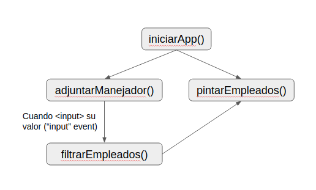

Debes completar la implementación de las funciones adjuntarManejador(), pintarEmpleados() y filtrarEmpleados() localizadas en sus respectivos archivos pintarEmpleados.js, filtrarEmpleados.js y adjuntarManejador.js. Muestro a continuación el diagrama de funcionamiento: 
A continuación el HTML de la aplicación a implementar